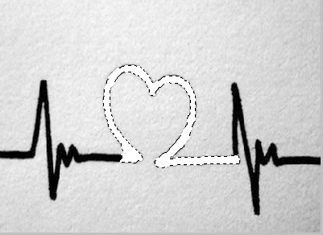
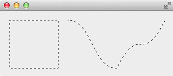

蚂蚁线是一个典型的 QPen 自定义 style 的应用，这里将介绍怎么使用 Qt 实现蚂蚁线。
QPen 已经提供了一些默认的 style，如 SolidLine, DashLine 等，但是满足不了所有的需求，所以还提供了自定义 style 的接口 QPen::setDashPattern()，其参数是一个 QVector，vector 中下标为偶数的位置存储 dash 的长度，奇数位置存储空白的长度，如 vector 的数据为 [3, 4, 9, 4]（偶数个元素）表示：画线时以 3 个 dash 开始，接着是4 个空白，接下来是 9 个 dash，4 个空白，此时 vector 的元素已经用完，则从头开始使用 vector 的元素，接着画 3 个 dash，4 个空白，9 个 dash，4 个空白，依此类推。
动物的一种本能现象，领头的蚂蚁以随机的路线走向食物或洞穴，第二只蚂蚁紧跟其后以相同的路线行走，每一个后来的蚂蚁紧跟前面蚂蚁行走，排成一条线的现象。在图像影像软件中表示选区的动态虚线，因为虚线闪烁的样子像是一群蚂蚁在跑，所以俗称蚂蚁线。在 Photoshop 中建立选区后，选区的边线就叫蚂蚁线：

前面的例子中也使用了自定义 style，但有点简单，有没有复杂点的应用呢？下面我们就用自定义 style 实现蚂蚁线。
1
2
3
4
5
6
7
8
9
10
11
12
13
14
15
16
17
18
19
20
21
22
23
24
25
26
27
28
29
|
#ifndef ANTLINEWIDGET_H
#define ANTLINEWIDGET_H
#include <QWidget>
#include <QVector>
class AntLineWidget : public QWidget {
Q_OBJECT
public:
explicit AntLineWidget(QWidget *parent = 0);
~AntLineWidget();
protected:
void timerEvent(QTimerEvent *event) Q_DECL_OVERRIDE;
void paintEvent(QPaintEvent *event) Q_DECL_OVERRIDE;
private:
void advanceDashes();
int timerId;
int dashes;
int spaces;
const int PATTERN_LENGTH;
QVector<qreal> dashPattern;
};
#endif
|
1
2
3
4
5
6
7
8
9
10
11
12
13
14
15
16
17
18
19
20
21
22
23
24
25
26
27
28
29
30
31
32
33
34
35
36
37
38
39
40
41
42
43
44
45
46
47
48
49
50
51
52
53
54
55
56
57
58
59
60
61
62
63
64
65
66
67
68
|
#include "AntLineWidget.h"
#include <QTimerEvent>
#include <QPainter>
#include <QPen>
#include <QPainterPath>
AntLineWidget::AntLineWidget(QWidget *parent) : QWidget(parent), PATTERN_LENGTH(4) {
dashes = PATTERN_LENGTH;
spaces = PATTERN_LENGTH;
for (int i = 0; i < 400; ++i) {
dashPattern << PATTERN_LENGTH;
}
timerId = startTimer(150);
}
AntLineWidget::~AntLineWidget() {
}
void AntLineWidget::timerEvent(QTimerEvent *event) {
if (event->timerId() == timerId) {
advanceDashes();
update();
}
}
void AntLineWidget::advanceDashes() {
if (PATTERN_LENGTH == dashes && PATTERN_LENGTH == spaces) {
dashes = 0;
spaces = 0;
}
if (0 == dashes && spaces < PATTERN_LENGTH) {
++spaces;
} else if (PATTERN_LENGTH == spaces && dashes < PATTERN_LENGTH) {
++dashes;
}
dashPattern[0] = dashes;
dashPattern[1] = spaces;
}
void AntLineWidget::paintEvent(QPaintEvent *) {
QPainter painter(this);
painter.setRenderHint(QPainter::Antialiasing);
QPen pen;
pen.setDashPattern(dashPattern);
painter.translate(20, 20);
painter.setPen(Qt::white);
painter.drawRect(0, 0, 100, 100);
painter.setPen(pen);
painter.drawRect(0, 0, 100, 100);
QPainterPath path;
path.cubicTo(50, 0, 50, 100, 100, 100);
path.cubicTo(150, 0, 150, 100, 200, 0);
painter.translate(120, 0);
painter.setPen(Qt::white);
painter.drawPath(path);
painter.setPen(pen);
painter.drawPath(path);
}
|
比较难以理解的就是 advanceDashes() 的算法，观察蚂蚁线的运动，发现如下规律：
- 第一个数字是开始的 dash 长度
- 第二个数字是 dash 后面跟着的 space 的长度
- 第三个数是 dash 的长度，总是 4
- 第四个数是 space 的长度，总是 4
- 第五个数是 dash 的长度，总是 4
- 第六个数是 space 的长度，总是 4
- ……
1
2
3
4
5
6
7
8
9
10
11
12
| ...............
0 4 4 4 ... 4 4
1 4 4 4 ... 4 4
2 4 4 4 ... 4 4
3 4 4 4 ... 4 4
4 4 4 4 ... 4 4
0 1 4 4 ... 4 4
0 2 4 4 ... 4 4
0 3 4 4 ... 4 4
0 4 4 4 ... 4 4
1 4 4 4 ... 4 4
...............
|
只有第一个和第二个数字是变化的：
- 当第一个数字是 0 时，第二个数字从 0 递增到 4
- 当第二个数字是 4 时，第一个数字从 0 递增到 4
- 当第一个和第二个数字都是 4 时，设置它们为 0，然后就会重复上面的步骤，实现了动画效果
程序运行后就像下图这样，蚂蚁线会不停的运动：
